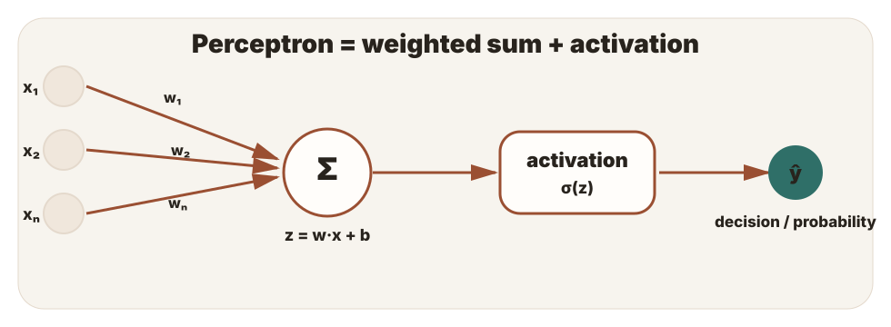
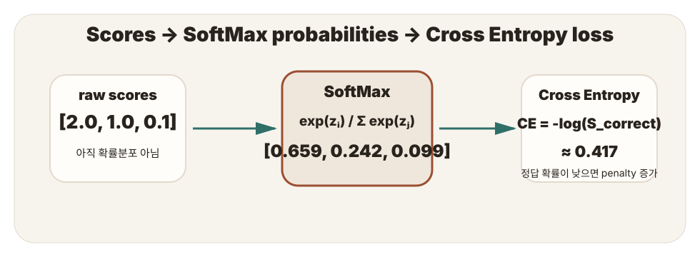
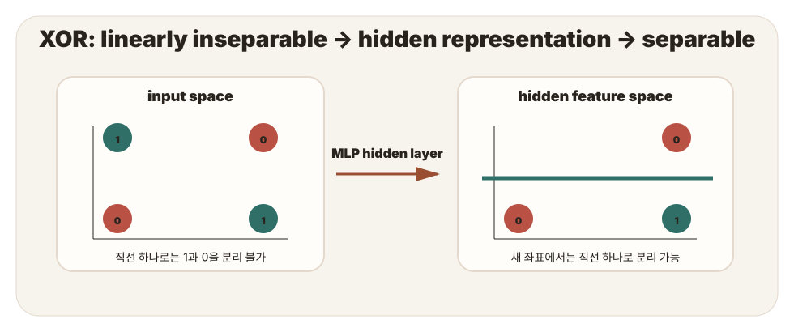

0. 전체 지도: ANN-1은 무엇을 연결하는가?
이 주제의 핵심은 “신경망”이라는 이름보다 계산 구조다. 하나의 artificial neuron은 입력을 받아 weighted sum → activation → output을 수행한다. 이것을 분류기로 보면 perceptron이고, 여러 개를 layer로 쌓으면 MLP가 된다.
모델 관점
ANN은 많은 neuron이 연결된 함수 근사기다. 각 neuron은 작은 선형모델과 activation을 가진다.
기하 관점
perceptron 하나는 선형 경계만 만든다. hidden layer는 입력 공간을 바꿔 더 쉬운 분리를 만든다.
손실 관점
SoftMax는 score를 확률분포로 바꾸고, Cross Entropy는 정답 class 확률을 loss로 바꾼다.
1. Artificial neuron: 생물학적 비유를 계산으로 바꾸기
생물학적 neuron의 수상돌기, 시냅스, 세포체, 축색돌기 비유는 유용하지만, 시험 답변에서는 반드시 계산으로 번역해야 한다.
| 비유 | 계산 요소 | 답안에서 쓸 말 |
|---|---|---|
| Dendrite | 입력 feature x | 여러 입력값이 neuron으로 들어온다. |
| Synapse | weight w | 각 입력의 영향력이 weight로 조절된다. |
| Cell body | weighted sum | z = w₁x₁ + ... + wₙxₙ + b를 계산한다. |
| Axon / output | activation output | σ(z) 또는 다른 activation 결과가 다음 layer로 전달된다. |

2. Perceptron: 하나의 선형 decision surface
Perceptron은 가장 기본적인 artificial neuron 분류기다. 입력이 2차원이라면 결정경계는 직선, 고차원에서는 hyperplane이다.
ŷ = activation(z)
decision boundary: w·x + b = 0
가능한 문제
class를 하나의 직선 또는 평면으로 나눌 수 있는 linearly separable problem.
불가능한 문제
XOR처럼 positive/negative point가 교차 배치된 not linearly separable problem.
중요한 함정은 activation이 있다고 해서 perceptron 하나가 복잡한 곡선 경계를 만드는 것은 아니라는 점이다. 경계는 여전히 w·x+b=0이다.
3. SoftMax와 Cross Entropy: score를 확률과 loss로 바꾸기
다중 클래스 분류에서 각 class는 score를 가진다. score 자체는 확률이 아니므로, class 간 상대적 크기를 반영하여 합이 1인 확률분포로 바꾸는 함수가 SoftMax다.

SoftMax
모든 class 확률이 양수이고 합이 1이 된다.
Cross Entropy
one-hot label이면 정답 class 항만 남아 CE = -log(S_correct)가 된다.
4. XOR와 MLP: single-layer의 한계를 넘는 법
XOR는 두 입력이 같으면 0, 다르면 1이다. 2차원 평면에서 1인 점들이 대각선에 놓이므로 직선 하나로 분리할 수 없다. MLP는 hidden layer가 새 feature를 만들어 이 문제를 해결한다.

| x₁ | x₂ | XOR y | 의미 |
|---|---|---|---|
| 0 | 0 | 0 | 같음 |
| 0 | 1 | 1 | 다름 |
| 1 | 0 | 1 | 다름 |
| 1 | 1 | 0 | 같음 |
답안 핵심
“MLP는 직선을 여러 개 긋기 때문에 XOR를 푼다”에서 멈추지 말고, hidden layer가 입력을 새로운 representation으로 바꾸어 최종 layer가 선형 분리 가능하게 만든다고 설명해야 한다.
5. 계산 실험: SoftMax와 loss를 손으로 느끼기
정답 class 확률에 따른 CE
3-class SoftMax mini calculator
6. 시험/복습용 핵심 정리
한 문장 정의
ANN은 weighted sum과 activation을 수행하는 artificial neuron들을 layer로 연결한 모델이다.
Perceptron 한계
perceptron 하나는 선형 decision boundary만 만들기 때문에 XOR 같은 비선형 분리 문제를 풀 수 없다.
MLP 해결
hidden layer와 nonlinear activation으로 representation을 바꾸어 최종 layer에서 선형 분리 가능하게 만든다.
자주 헷갈리는 비교
| 비교 | 구분 기준 |
|---|---|
| Sigmoid vs SoftMax | sigmoid는 각 score를 독립적으로 0~1로 압축하고, SoftMax는 전체 score를 합이 1인 분포로 정규화한다. |
| BCE vs Cross Entropy | BCE는 binary classification, CE는 multiclass one-hot label과 SoftMax output에 주로 연결된다. |
| SVM kernel vs MLP | 둘 다 비선형 문제를 선형 분리 가능한 표현으로 바꾸지만, MLP는 hidden representation을 학습한다. |
7. 확인 문제
각 문제의 정답을 클릭해봐. 오답은 왜 틀렸는지 바로 확인할 수 있다.